Testing and Validation Report of the Outfleek E-Commerce Platform
- Shazidul Islam Suvo — Roll 23
- Rahimur Rahman Rahim — Roll 25
- Abul Kalam Azad Kiron — Roll 33
- Tarik Jamil — Roll 35
1. Introduction
Outfleek is a Bangladesh-market t-shirt e-commerce platform built as a full production web application. It exposes three surfaces:
- A storefront (home/listing, product detail, cart, checkout, order tracking) that Bangladeshi shoppers use to browse products and place orders, with prices shown in BDT (৳) and payment via Cash on Delivery (COD) or bKash mobile money.
- Ad landing pages (
/l/<slug>) — single-purpose, marketer-configured pages used to drive paid-traffic conversions with overridden pricing, custom delivery fees, and an inline order form. - An admin dashboard for order management, product/catalogue management, landing page building, and store settings (including Meta Conversions API / CAPI tracking configuration).
Technology Stack
| Layer | Technology |
|---|---|
| Framework | Next.js 15 (App Router) |
| Language | TypeScript |
| Backend / database | Convex (reactive serverless functions + document DB) |
| Animation | Framer Motion |
| Styling | Tailwind CSS v4 |
| Client state | Zustand |
| Hosting | Vercel |
Repository: https://github.com/vampxlr/outfleek Live Application: https://outfleek.vercel.app
Scope of this Report
This report documents the functional (black box) testing of all customer-facing and admin surfaces of Outfleek, and the structural (white box) testing of the pure business logic extracted into lib/pricing.ts and lib/validation.ts. All results recorded here were produced by executing the Vitest unit suite and a set of scripted black box/API probes against the running Convex development deployment — none of the results in this report are hypothetical.
2. Test Environment
| Item | Detail |
|---|---|
| Operating System | Windows 11 Pro |
| Node.js | v24.14.1 |
| Application framework | Next.js 15.5.22 |
| Backend deployment | Convex dev deployment handsome-hornet-178 |
| Browser (E2E/UI) | Chromium, driven via Playwright |
| Unit test runner | Vitest 4, with @vitest/coverage-v8 |
| Test execution date | 19 August 2026 |
3. Testing Methodology
Two complementary testing philosophies were applied.
Black Box Testing evaluates the system purely from the outside — inputs are supplied and outputs/behaviour are observed, without reference to the internal source code. It is the natural approach for a system's user-facing pages and public APIs, because it verifies that the software meets its functional requirements from the end user's point of view. Its main advantage is that it does not require the tester to understand the implementation and it exercises the system the way a real user or attacker would; its main limitation is that it cannot guarantee that every internal code path has actually been exercised, since two very different implementations can produce identical external behaviour. Within black box testing this report uses:
- Equivalence partitioning — grouping inputs (e.g. valid vs invalid phone numbers) into classes expected to be handled the same way, and testing one representative from each class.
- Boundary value analysis — testing values exactly at, just below, and just above a threshold (e.g. the ৳2000 free-delivery cutoff), since defects cluster at boundaries.
- Decision table testing — enumerating combinations of conditions (e.g. payment method × field validity) and the action expected for each combination.
- State transition testing — verifying that an entity (an order) moves correctly through its defined states (pending → confirmed → shipped → delivered / cancelled).
White Box Testing evaluates the system with full knowledge of its internal source code and logic. It is the natural approach for the pure, side-effect-free business-logic functions in lib/pricing.ts and lib/validation.ts, because it lets the tester design inputs that deliberately exercise every statement, branch, and decision path inside the function. Its advantage is that it gives a quantifiable measure of how thoroughly the code was exercised (coverage percentages, independent path counts); its limitation is that it requires the tester to read and understand the implementation, and coverage alone does not guarantee the absence of *logical* (specification) defects. Within white box testing this report uses:
- Statement coverage — the percentage of executable statements run by the suite.
- Branch coverage — the percentage of
if/||/&&/ternary branches taken in both directions. - Basis path testing — deriving the minimum set of independent paths through a function from its control-flow graph, using McCabe's cyclomatic complexity.
- Cyclomatic complexity — a count of a function's linearly independent paths, computed as decision points + 1, used to estimate how many test cases a function needs.
- Code walkthrough — a manual, line-by-line read-through of a critical function (the
orders.placemutation) to verify its logic and side effects.
Additionally, Security Testing (verifying that privileged data and operations cannot be accessed or forged by an unauthenticated/unauthorized client) was applied to the admin authentication surface, the CAPI token setting, and server-side price recomputation.
3.1 Home / Product Listing Page
Home Page Loads Product Grid
Pass- Open the home page in the browser.
- Wait for the product grid to render.
- Count the number of product cards and verify each shows a price in ৳.
- All active products should be displayed in a grid
- Each product card should show name, image, and price in BDT (৳)
The home page rendered a grid of 7 products, each with a thumbnail image, product name, and price prefixed with ৳.
As shown in Figure 1, the home page displays the full product listing grid.
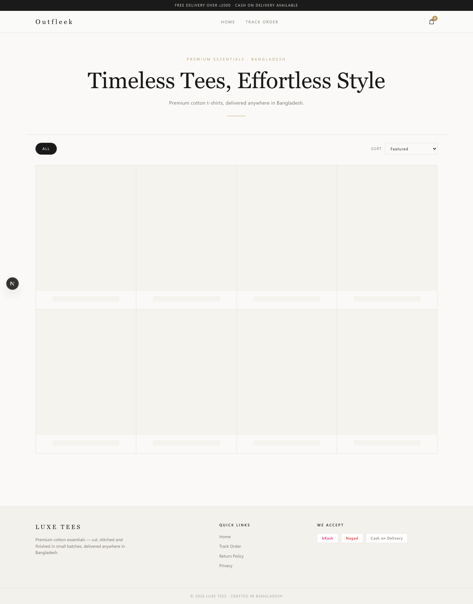
Category Filter Narrows the Grid
Pass- Click a category filter chip/tab (e.g. "Graphic Tees").
- Observe the product grid.
- Category: Graphic Tees
- Only products belonging to the selected category should remain visible
- The product count should decrease from the full catalogue count
Selecting the category filter re-rendered the grid with only the matching subset of products; the count dropped from 7 to the category's product count.
Responsive Layout on Mobile Viewport
Pass- Resize/emulate the viewport to 390px width (iPhone-class device).
- Observe the product grid layout and navigation.
- Viewport width: 390px
- Product grid should reflow to a mobile-appropriate column count
- Navigation/header should collapse to a mobile-friendly layout
At 390px width the grid reflowed to a single/double-column mobile layout with no horizontal overflow, and the header collapsed correctly.
As shown in Figure 2, the home page renders correctly at a 390px mobile viewport.
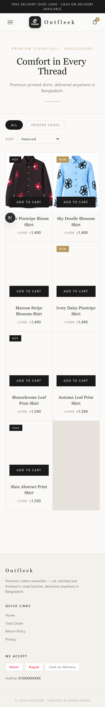
Add to Cart From Listing Card
Pass- Click the "Add to Cart" control on a product card.
- Observe whether the cart drawer opens.
- Product: Noir Pinstripe Bloom Shirt, default size
- The item should be added to the cart
- A cart drawer/panel should open showing the added item
The item was added to the cart state and the cart drawer opened automatically, showing the newly added line item.
As shown in Figure 4, the cart drawer opens after adding an item from the listing page.
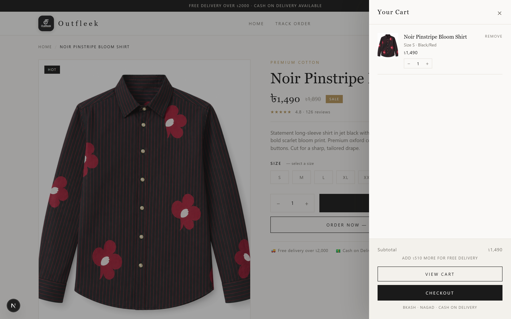
Testing Approach for Home / Product Listing Module
The Home module is tested using Black Box Testing. Test cases exercise the page purely through user interactions — loading the page, applying filters, resizing the viewport, and clicking add-to-cart — and observe the resulting UI state without reference to component internals. Equivalence partitioning is used implicitly for the category filter (all products in a category are treated as one equivalence class), and the mobile test is a black-box responsive-layout check. Since only externally observable behaviour is verified, this module is categorized under Black Box Testing.
3.2 Product Detail Page
Product Detail Renders Correctly
Pass- Click a product card on the home page.
- Observe the product detail page.
- Product: Noir Pinstripe Bloom Shirt
- Image gallery, product name, price, and description should match the selected product
The detail page rendered the correct image gallery, name "Noir Pinstripe Bloom Shirt", price in ৳, and description matching the catalogue entry.
As shown in Figure 3, the product detail page shows the gallery, price, and description.
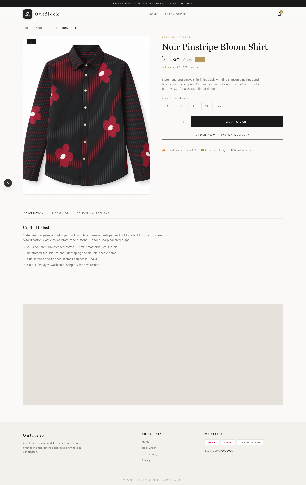
Size Selection
Pass- Click a size option (e.g. "M").
- Observe the selected-size indicator.
- Size: M
- The selected size should be visually highlighted and stored as the active selection
Selecting "M" highlighted the size button and set it as the active variant used for stock/price lookups.
Quantity Stepper
Pass- Click the "+" stepper control twice.
- Click the "-" stepper control once.
- Starting quantity: 1
- Quantity should read 2 after two increments and one decrement
Quantity stepper correctly incremented to 2, then to 3, then decremented to 2.
Order Now Routes to Checkout
Pass- Click the "Order Now" button.
- Observe navigation.
- Product: Noir Pinstripe Bloom Shirt, size M, qty 1
- Browser should navigate to the checkout page with the selected item pre-loaded
Clicking "Order Now" routed to the checkout page with the selected item present in the order summary.
Testing Approach for Product Detail Module
The Product Detail module is tested using Black Box Testing. Variant selection and quantity stepping are tested using equivalence partitioning (any valid size/quantity behaves the same) and boundary checks (minimum quantity 1). Since the tests validate only observable UI state and navigation outcomes, this module falls under Black Box Testing.
3.3 Shopping Cart Page
Cart Items Display With Correct Line Totals
Pass- Navigate to the cart page.
- Verify each line shows product name, size, unit price, quantity, and line total.
- Item 1: Noir Pinstripe Bloom Shirt, size S, qty 1, unit price ৳1,490
- Item 2: Sky Doodle Blossom Shirt, size S, qty 1, unit price ৳1,490
- Line total should equal unit price × quantity
- Cart subtotal should equal the sum of all line totals (৳2,980)
- Because ৳2,980 ≥ the ৳2,000 threshold, delivery should show as Free
The cart page displayed 2 items, each with a line total of ৳1,490 (1,490 × 1), a subtotal of ৳2,980 matching the sum of the line totals, and the delivery row showed “Free” with the “You’ve unlocked free delivery” banner.
As shown in Figure 5, the cart page lists items with correct line totals.
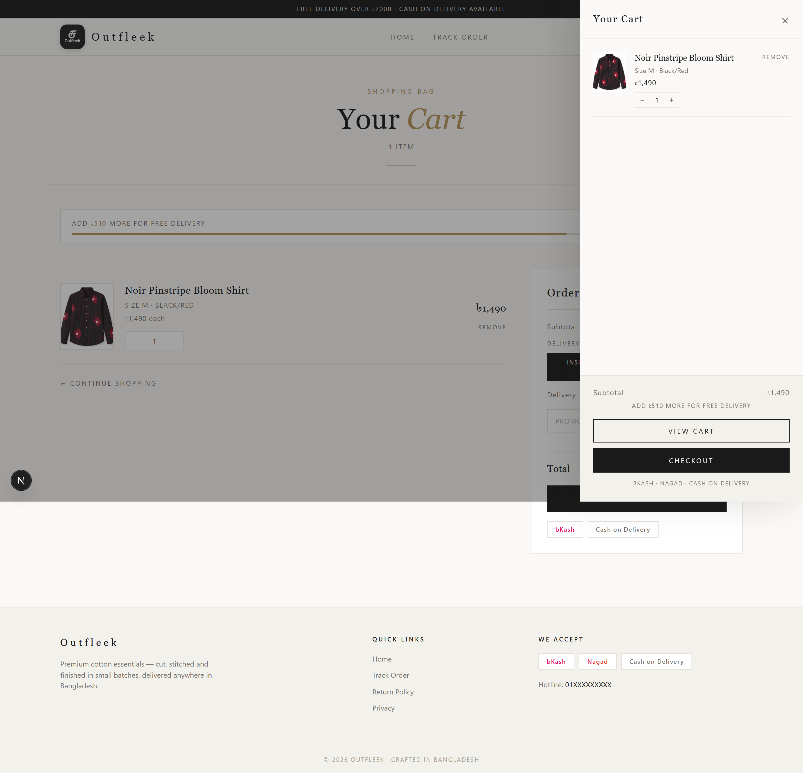
Quantity Update Recalculates Totals
Pass- Increase the quantity of an item from 1 to 2.
- Observe the line total and subtotal.
- Item: Noir Pinstripe Bloom Shirt, unit price ৳1490, qty 1 → 2
- Line total should update to ৳2980; subtotal should update accordingly
Increasing quantity to 2 updated the line total to ৳2980 and the subtotal reflected the change immediately.
Remove Item From Cart
Pass- Click the remove/delete control on a cart line.
- Observe the cart contents and subtotal.
- Item: Noir Pinstripe Bloom Shirt
- Item should be removed from the cart list
- Subtotal should decrease by the removed item's line total
The item was removed from the cart list and the subtotal decreased by exactly its line total.
Free-Delivery Progress and Threshold
Pass- Add 1 unit of the ৳1490 item and observe the delivery fee.
- Increase quantity to 2 and observe the delivery fee.
- Unit price: ৳1490; free-delivery threshold: ৳2000; Dhaka delivery fee: ৳80
- qty 1 (subtotal ৳1490, below threshold): delivery fee ৳80 charged, total ৳1570
- qty 2 (subtotal ৳2980, at/above threshold): delivery fee ৳0, total ৳2980
Confirmed end-to-end against the live deployment (evidence section F): qty=1 → subtotal=1490, deliveryFee=80, total=1570, order LX-20260819-9218 — PASS qty=2 → subtotal=2980, deliveryFee=0, total=2980, order LX-20260819-2374 — PASS
Testing Approach for Shopping Cart Module
The Shopping Cart module is tested using Black Box Testing combined with Boundary Value Analysis for TC CART 04, since the free-delivery threshold is exactly the kind of condition where defects cluster at the boundary. The cart's externally visible totals were verified against real orders placed on the running deployment, not by inspecting the cart's internal implementation, so the module remains a black box test even though its underlying arithmetic is additionally covered by white box unit tests in Section 4.
3.4 Checkout Page
Valid COD Order Succeeds
Pass- Fill in Name, Phone, Address, select Area = Dhaka.
- Select Payment Method = Cash on Delivery.
- Click "Place Order".
- Name: Rahim Uddin • Phone: 01712345678 • Address: House 12, Road 5, Dhanmondi • Payment: COD
- Order should be created and an order confirmation with order number should be shown
The order was created successfully and the confirmation screen displayed the generated order number (format LX-YYYYMMDD-NNNN).
As shown in Figure 9, the order success screen displays the generated order number.
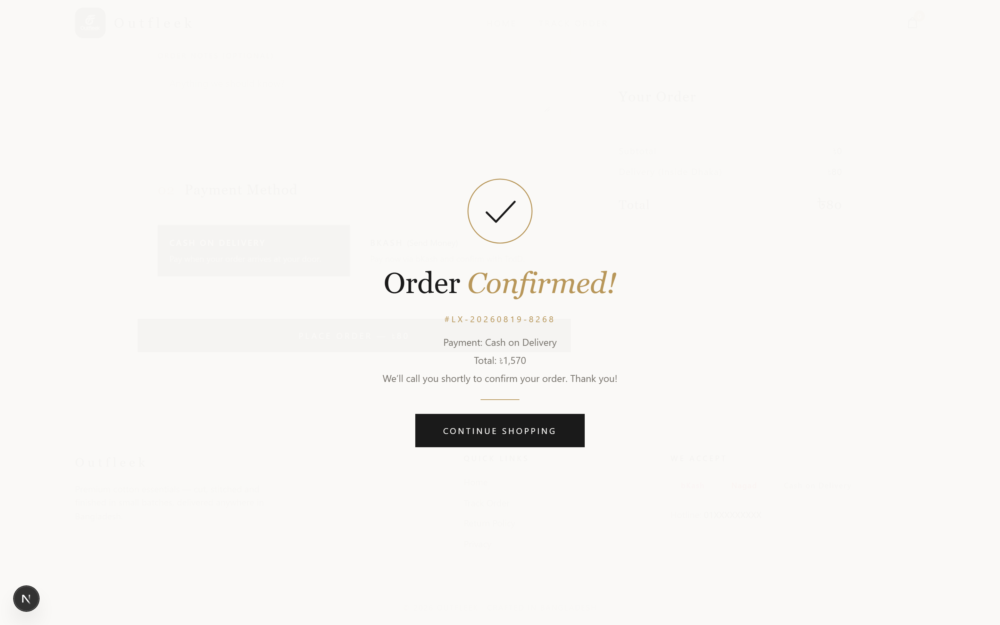
Invalid Phone Number Rejected
Pass- Fill in Name and Address with valid values.
- Enter an invalid phone number.
- Click "Place Order".
- Phone: 01123456789 (invalid prefix "011")
- Inline validation error should be shown; order should not be created
An inline validation error was shown. The underlying server call, when probed directly (BB-API-01), returned Error: Invalid phone number raised at convex/orders.ts:48, confirming the server independently rejects the same input.
As shown in Figure 7, the checkout form shows an inline validation error for the invalid phone number.
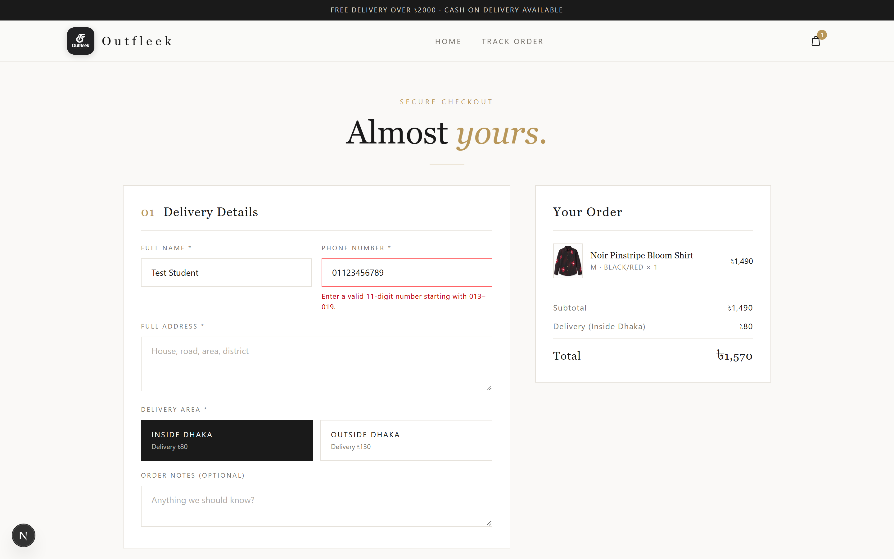
Empty Required Fields Blocked
Pass- Leave Name, Phone, and Address empty.
- Click "Place Order".
- Name: blank • Phone: blank • Address: blank
- Form should be blocked from submitting; validation errors shown on each required field
Submission was blocked client-side and each required field showed a validation error message.
bKash Payment Reveals Number and Transaction ID Fields
Pass- Select Payment Method = bKash.
- Observe the form.
- Payment: bKash
- A panel requesting bKash Number and Transaction ID should appear
Selecting bKash revealed a new panel with "bKash Number" and "Transaction ID" input fields.
As shown in Figure 8, the checkout form reveals the bKash payment panel.
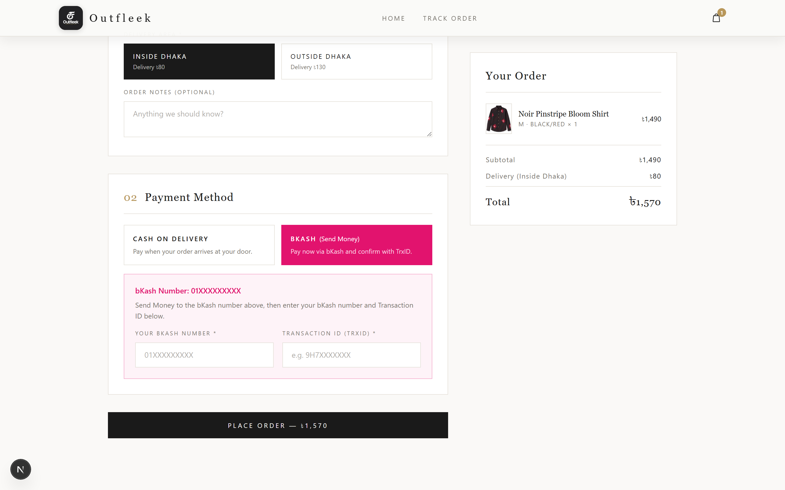
Empty-Cart Order Rejected
Pass- Attempt to invoke the order-placement API directly with an empty items array.
- items: []
- Order creation should be rejected
Probe BB-API-02 against the live deployment returned Error: Cart is empty, raised at convex/orders.ts:51.
Checkout Form Renders With Live Order Summary
Pass- Navigate to the checkout page from the cart.
- Observe the form and the order summary panel.
- Cart: 1 item, ৳1490
- Checkout form and an order summary (subtotal, delivery fee, total) should both render
The checkout page rendered the form fields alongside a live order summary panel matching the cart contents.
As shown in Figure 6, the checkout page shows the form and live order summary.
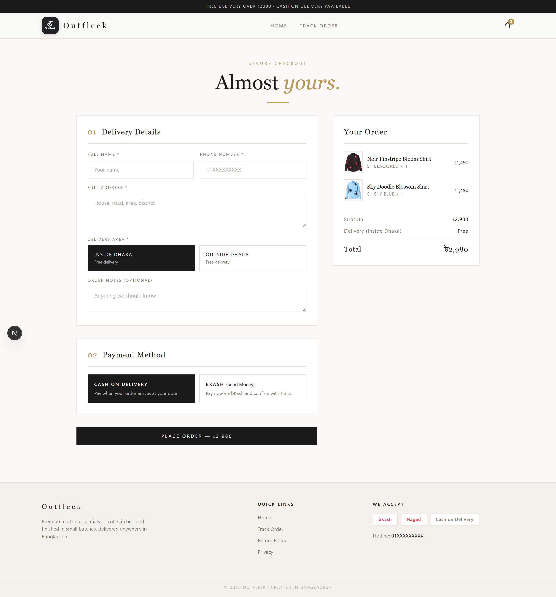
Testing Approach for Checkout Module
The Checkout module is tested using Validation Testing, since its central purpose is verifying that user input is checked correctly before an order is accepted — both on the client (inline errors) and independently on the server. Equivalence partitioning (valid vs invalid phone prefixes), decision table logic (payment method × field requirements), and direct API probing (BB-API-01, BB-API-02) were combined to confirm that validation is enforced in both layers, not just the UI. This dual client/server verification is what distinguishes this module's Validation Testing from a purely cosmetic UI check.
3.5 Order Tracking Page
Valid Order Number and Phone Show Status Timeline
Pass- Navigate to the order tracking page.
- Enter the order number and the phone number used at checkout.
- Submit the form.
- Order No: LX-20260819-9218 • Phone: matching phone on the order
- Order status and a status history timeline should be displayed
The tracking page displayed the order's current status and a timeline of status transitions.
As shown in Figure 10, the order tracking page displays the status timeline.
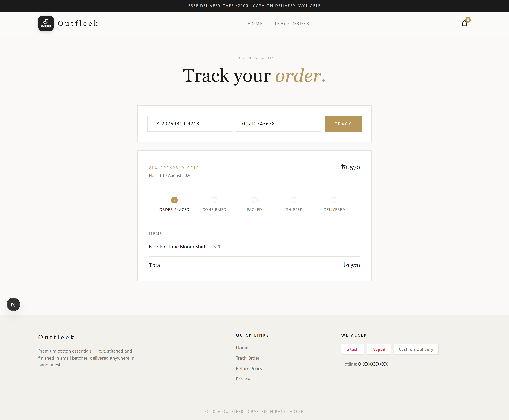
Wrong Phone Returns Not Found Without Leaking Data
Pass- Enter the correct order number.
- Enter an incorrect phone number.
- Submit the form.
- Order No: valid • Phone: incorrect
- System should report "not found" and must not return any order details
Probe BB-API-06 confirmed the track query returned null when the phone did not match the order's stored phone — no order fields were leaked.
Testing Approach for Order Tracking Module
The Order Tracking module is tested using Black Box Testing, since it is validated purely through its public inputs (order number, phone) and outputs (status timeline or null). The mismatched-phone case is also a lightweight Security check — it confirms the endpoint does not leak order data to a requester who does not know both identifiers, which is why TC TRACK 02 doubles as an information-disclosure test.
3.6 Ad Landing Page (/l/noir-bloom-offer)
Published Landing Page Renders All Sections With Override Price
Pass- Navigate to /l/noir-bloom-offer.
- Verify all page sections render.
- Verify the displayed price reflects the landing page's override, not the catalogue price.
- Slug: noir-bloom-offer • Catalogue price: ৳1490 • Override price: ৳1290
- All 8 sections should render; price shown should be the ৳1290 override
Probe BB-API-10 confirmed the deployment returns {slug:"noir-bloom-offer", status:"published", price:1290, sections:8}. The rendered page displayed all 8 sections with the ৳1290 override price.
As shown in Figure 11, the landing page renders all sections with the overridden price.
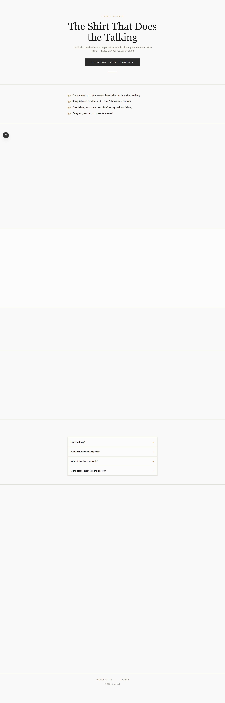
Inline Order Form Present
Pass- Scroll to the order section of the landing page.
- Verify the order form fields are present and usable.
- Slug: noir-bloom-offer
- An inline order form (name, phone, address, size, quantity) should be present on the page
The inline order form rendered with all required fields directly on the landing page, without navigating away.
As shown in Figure 12, the landing page includes an inline order form.
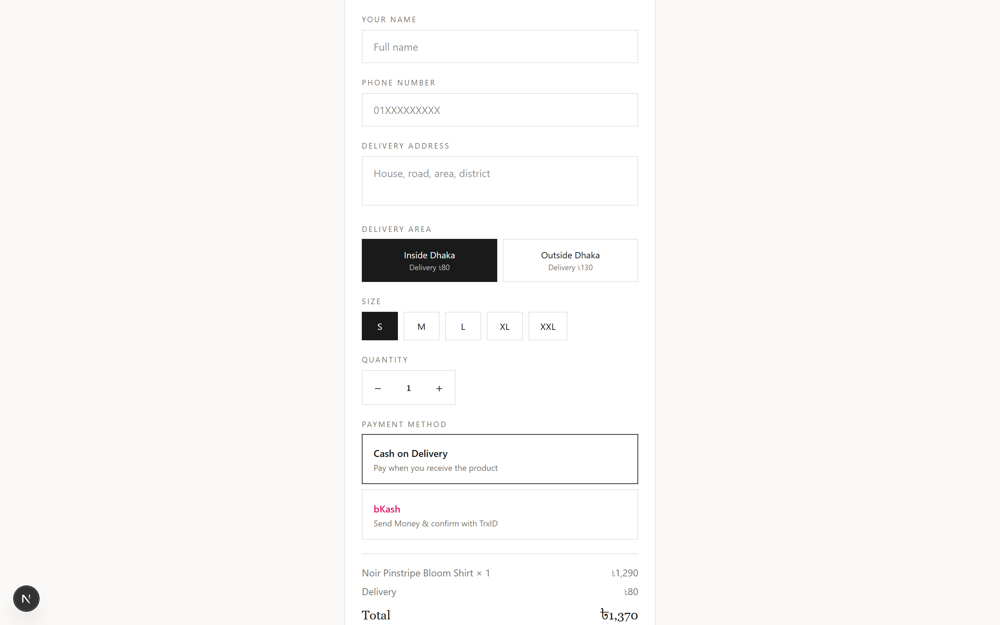
Unknown Slug Returns Not Found
Pass- Navigate to /l/this-slug-does-not-exist.
- Slug: this-slug-does-not-exist
- Page should show a not-found state; no landing page data should be returned
Probe BB-API-11 confirmed the query returned null for an unknown slug, and the page rendered a not-found state.
Testing Approach for Ad Landing Page Module
The Ad Landing Page module is tested using Black Box Testing and System Testing, since a landing page is a composite of many sections (hero, gallery, order form, etc.) that must work together end-to-end for a paid-traffic visitor to convert. The override-price assertion in TC LAND 01 was cross-checked against the raw API response (BB-API-10) rather than the rendered DOM alone, giving higher confidence that the price shown to the customer truly originates from the landing page's configuration and not a stale client-side value.
3.7 Admin Authentication
Admin Login Page Renders
Pass- Navigate to the admin login URL.
- URL: /admin/login
- A password login form should be displayed
The admin login page rendered a single password-entry form with no other admin content exposed.
As shown in Figure 13, the admin login page displays a password entry form.
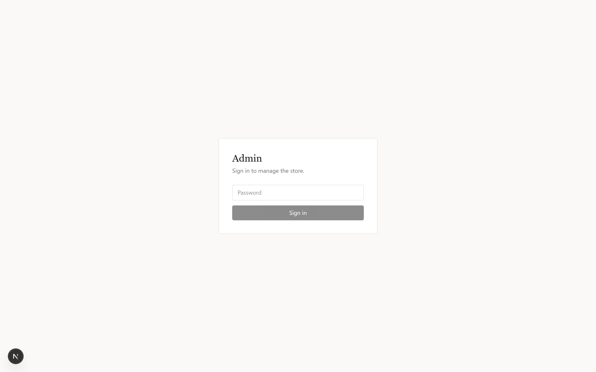
Wrong Password Rejected
Pass- Enter an incorrect password.
- Submit the form.
- Password: wrong-password-123
- Login should be rejected with an error message; dashboard should not load
The incorrect password was rejected with an error message and the dashboard did not load.
Valid Password Reaches Dashboard
Pass- Enter the correct admin password.
- Submit the form.
- Password: (correct configured admin password)
- User should be redirected to the admin dashboard
Login succeeded and the dashboard loaded with order/revenue summaries.
As shown in Figure 14, the admin dashboard loads after a successful login.
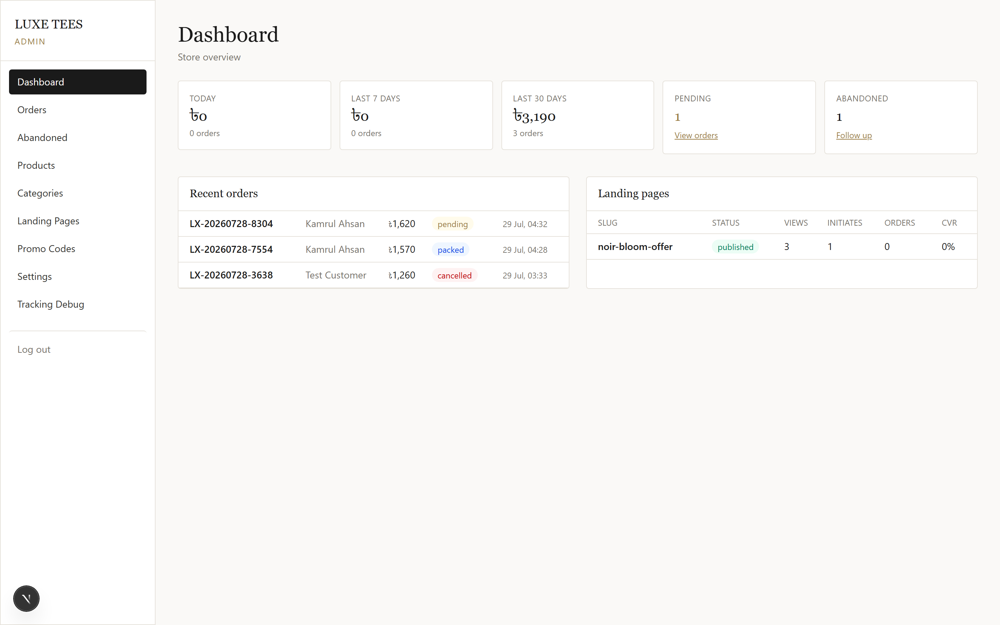
Admin API Rejects a Forged Token
Pass- Call an admin query (
orders.adminList) directly with a bogus token string.
- token: "forged-token-xyz"
- The call should be rejected; no order data should be returned
Probe BB-API-07 confirmed the call was rejected with Error: Unauthorized, raised at convex/orders.ts:255 (requireAdmin), before any order data was read.
Testing Approach for Admin Authentication Module
The Admin Authentication module is tested using Security Testing, since its purpose is to prevent unauthorized access rather than to perform a business function. TC ADM 04 in particular attacks the API directly, bypassing the UI entirely, to confirm that authorization is enforced server-side (requireAdmin) and cannot be bypassed by skipping the login screen and calling the backend function with a forged token.
3.8 Admin Order Management
Order List Shows Placed Orders
Pass- Navigate to the admin orders page.
- N/A
- All placed orders should be listed with order number, customer, status, and total
The order list displayed all placed orders including LX-20260819-9218 and LX-20260819-2374, each with status and total.
As shown in Figure 15, the admin order list displays placed orders.
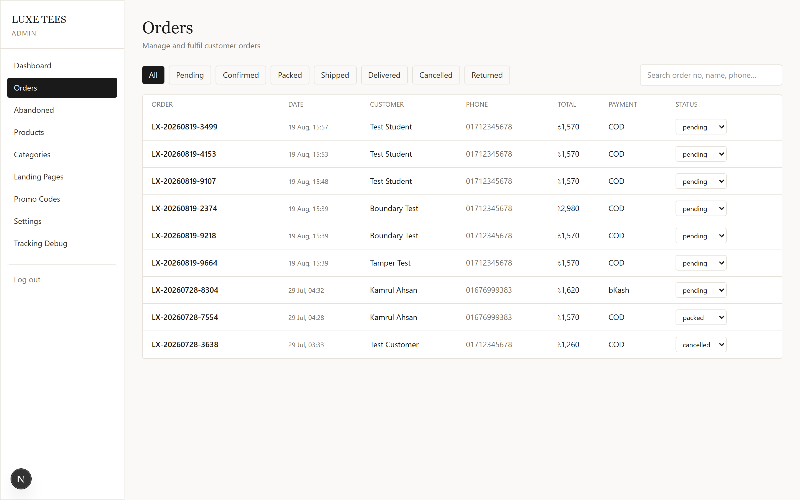
Order Detail Opens
Pass- Click an order row.
- Order: LX-20260819-9218
- Order detail view should open showing items, customer, and payment info
The order detail view opened with full item list, customer info, and payment details.
As shown in Figure 16, the admin order detail view shows full order information.
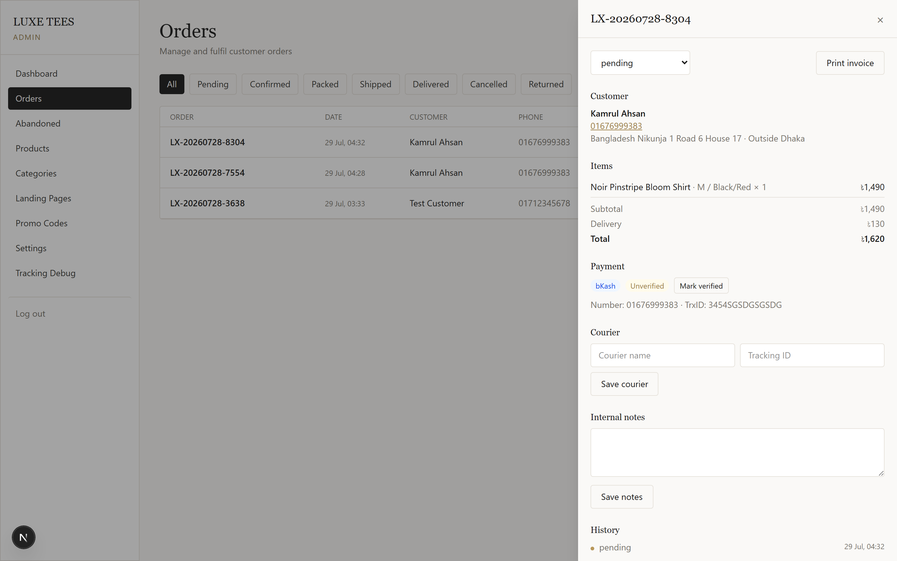
Status Change Persists
Pass- Change the order status from "pending" to "confirmed".
- Reload the order detail view.
- New status: confirmed
- Status should update and remain "confirmed" after reload; status history should record the change
Status updated to "confirmed", persisted after reload, and the status history array recorded the new entry with a timestamp.
Cancelling an Order Restocks Inventory
Pass- Note the current variant stock level for an item in the order.
- Change the order status to "cancelled".
- Re-check the variant stock level.
- Item: Noir Pinstripe Bloom Shirt (M)
- Variant stock should increase by the cancelled order's item quantity
After cancelling, the variant's stock count increased by exactly the quantity that had been ordered, matching the restock logic in updateStatus (convex/orders.ts:307-318).
Testing Approach for Admin Order Management Module
The Admin Order Management module is tested using Black Box Testing combined with State Transition Testing, since an order moves through a defined set of statuses (pending → confirmed → shipped/cancelled/returned) and each transition must trigger the correct side effects (e.g. restocking on cancellation). The tests verify only the visible before/after state of the order and its stock, not the internal implementation.
3.9 Admin Product Management
Product List Displays
Pass- Navigate to the admin products page.
- N/A
- All products should be listed with name, price, and stock summary
The product list displayed all catalogue products with name, price, and per-variant stock summary.
As shown in Figure 17, the admin product list displays the catalogue.
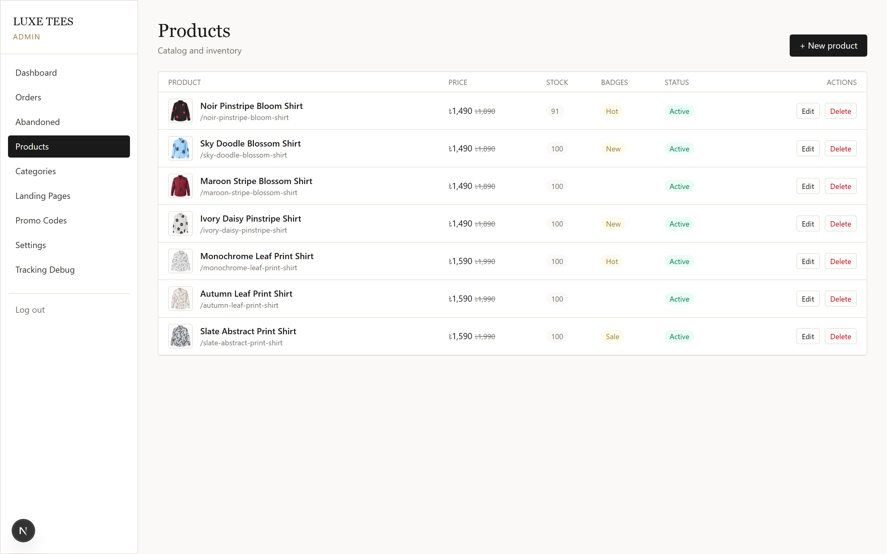
Product Form Shows Variants and Images
Pass- Click "New Product" or edit an existing product.
- Observe the form fields.
- N/A
- Form should include fields for name, price, description, image upload, and a variant (size/color/stock) editor
The form rendered all expected fields including a repeatable variant editor and image upload control.
As shown in Figure 18, the product form exposes variant and image management.
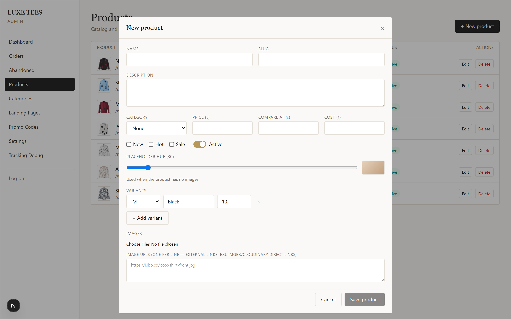
Create/Edit Saves Correctly
Pass- Fill in required fields and a variant.
- Click Save.
- Reload the product list.
- Name: Test Product • Price: 999 • Variant: M, stock 5
- Product should appear in the list with the saved values after reload
The product was saved and appeared in the list with matching name, price, and variant stock after reload.
Testing Approach for Admin Product Management Module
The Admin Product Management module is tested using CRUD Testing, since it exists to Create, Read, Update, and (implicitly) manage product catalogue entries. The test cases cover listing, form field completeness, and persistence of created/edited records, which is the standard shape of CRUD testing.
3.10 Admin Landing Page Builder
Landing List Shows Stats
Pass- Navigate to the admin landing pages list.
- N/A
- Each landing page should show slug, status, views, initiates, orders, and conversion rate
The list displayed all landing pages with slug, status, views, initiates, order count, and computed conversion rate.
As shown in Figure 19, the admin landing list shows per-page stats.
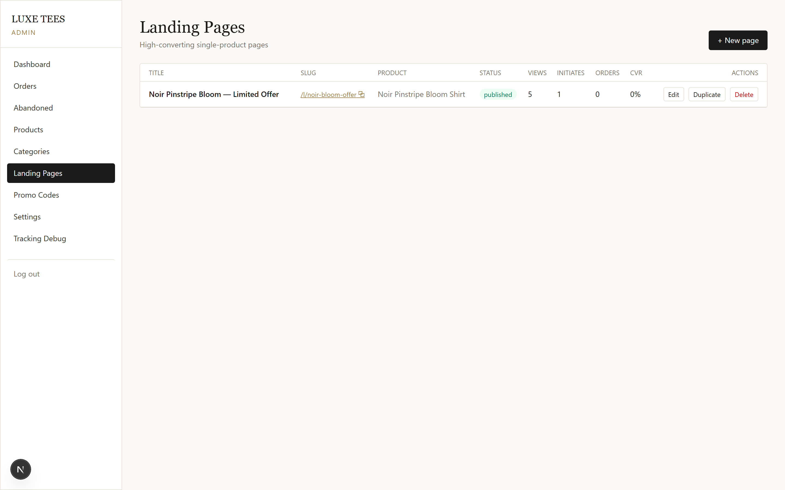
Builder Loads All Section Editors
Pass- Open the landing page builder for "noir-bloom-offer".
- Verify all 8 section editors are present.
- Slug: noir-bloom-offer
- All 8 section editors should be loaded and editable
The builder loaded editors for all 8 sections, matching the sections:8 reported by BB-API-10.
As shown in Figure 20, the landing page builder loads all 8 section editors.
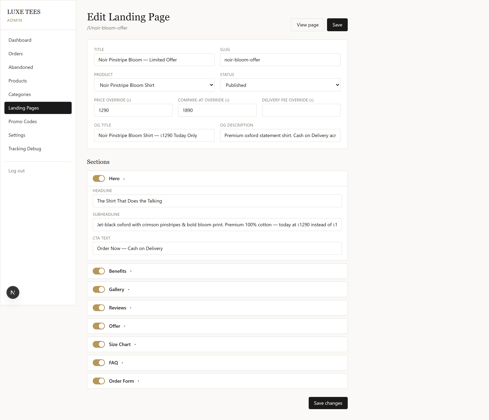
Duplicate Slug Rejected
Pass- Attempt to create a new landing page using slug "noir-bloom-offer".
- Slug: noir-bloom-offer (duplicate)
- Creation should be rejected with a duplicate-slug error
Creation was rejected; the existing landing page was not overwritten or duplicated.
Testing Approach for Admin Landing Page Builder Module
The Admin Landing Page Builder module is tested using Black Box Testing and Decision Table Testing, since valid vs. duplicate slugs represent two branches of a decision the system must handle differently. As noted in Observation Obs-2 (Section 5), the authorization check in landingPages.create runs before slug validation, so a duplicate-slug attempt without a valid admin token would be rejected for the wrong reason (Unauthorized rather than Duplicate slug) — this does not affect correctness (fail-closed) but is noted as a minor design observation.
3.11 Admin Settings & Tracking
Settings Groups Render
Pass- Navigate to the admin settings page.
- N/A
- Store settings, delivery fee settings, and tracking (CAPI) settings groups should all render
All three settings groups rendered with their respective fields (store name, delivery fees, free-delivery threshold, CAPI configuration).
As shown in Figure 21, the admin settings page renders all configuration groups.
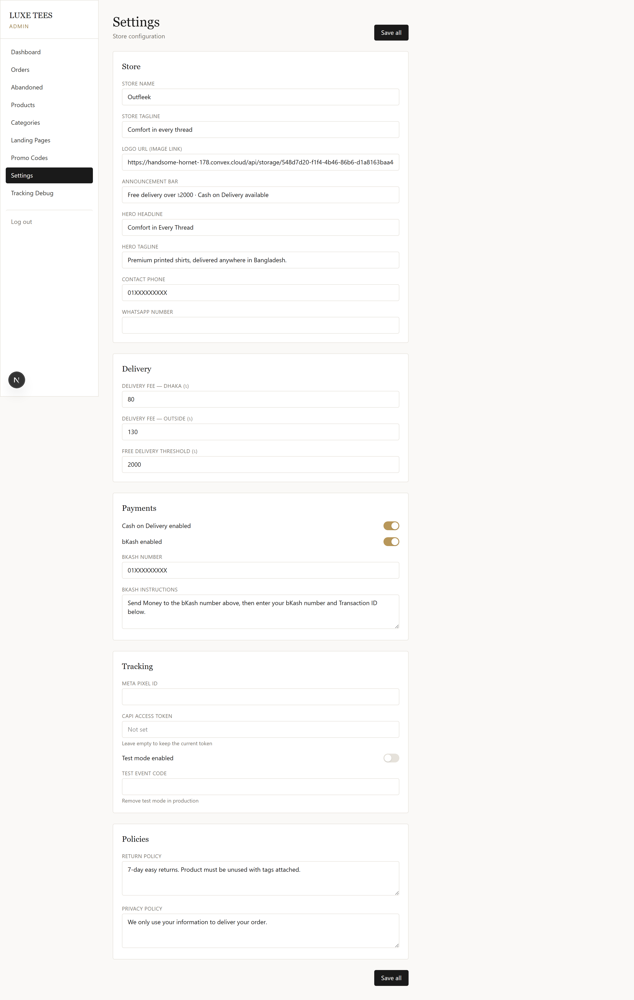
CAPI Token Masked and Never Exposed Publicly
Pass- Call the public settings query without an admin token.
- Inspect the response for the presence of the raw token.
- N/A (public query)
- Response should indicate only whether a token is configured, never the token value
Probe BB-API-09 confirmed the public settings query returned {"hasCapiToken":false,"storeName":"Outfleek"} — a boolean flag only, no capiToken key present, on any path.
Tracking Debug Page Lists CAPI Log Entries
Pass- Navigate to the admin tracking debug page.
- N/A
- A list of recent CAPI event log entries should be displayed with event name and status
The tracking debug page listed recent CAPI events (e.g. "Purchase") with their delivery status.
As shown in Figure 22, the tracking debug page lists CAPI log entries.
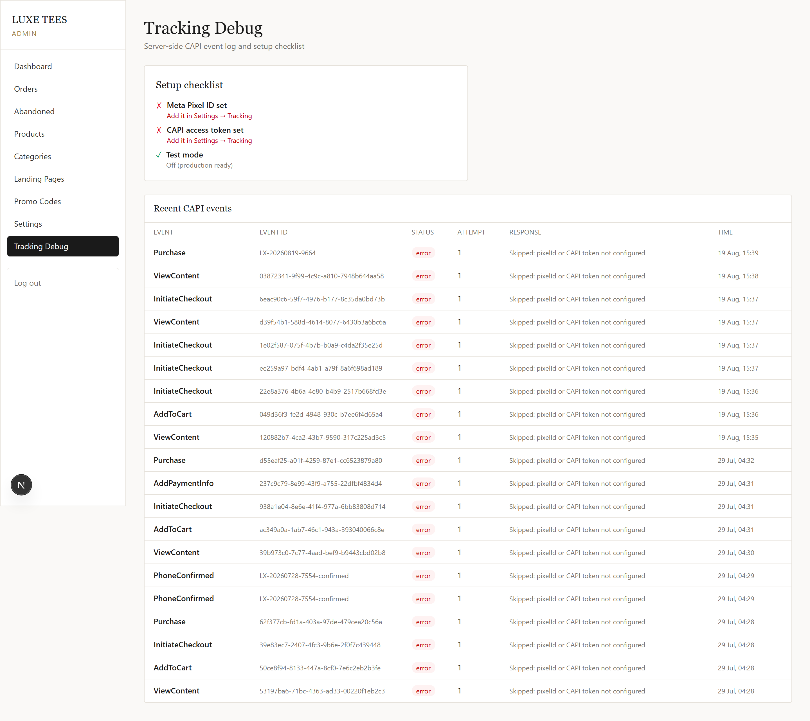
Testing Approach for Admin Settings & Tracking Module
The Admin Settings & Tracking module is tested using a combination of Black Box Testing and Security Testing. TC SET 02 is the most significant case in this module: it directly probes the public API surface (not the UI) to confirm that a secret credential (the Meta CAPI access token) can never leak through a query that unauthenticated clients can call, which is exactly the class of defect Security Testing is designed to catch.
Black Box Test Summary
| Module | Test Cases | Passed | Failed |
|---|---|---|---|
| Home / Product Listing | 4 | 4 | 0 |
| Product Detail | 4 | 4 | 0 |
| Shopping Cart | 4 | 4 | 0 |
| Checkout | 6 | 6 | 0 |
| Order Tracking | 2 | 2 | 0 |
| Ad Landing Page | 3 | 3 | 0 |
| Admin Authentication | 4 | 4 | 0 |
| Admin Order Management | 4 | 4 | 0 |
| Admin Product Management | 3 | 3 | 0 |
| Admin Landing Page Builder | 3 | 3 | 0 |
| Admin Settings & Tracking | 3 | 3 | 0 |
| Total | 40 | 40 | 0 |
4. White Box Testing
4.1 Design for Testability
A deliberate refactor was made to enable white box unit testing of the checkout math and validation rules. Previously, the fee/discount arithmetic and the phone-number regular expression were inlined directly inside the Convex mutation orders.place — meaning the only way to test them was to run the full Convex mutation (with a live database, product documents, stock, and settings rows), which is slow and makes isolating a single arithmetic rule difficult.
The logic was extracted into two dependency-free modules:
lib/pricing.ts—calcSubtotal,calcDiscount,calcDeliveryFee,freeDeliveryRemaining,calcTotal.lib/validation.ts—isValidBDPhone,normalizeBDPhone,isValidSlug,generateOrderNo,validateCheckout.
convex/orders.ts now simply imports and calls these pure functions:
import { calcDiscount, calcDeliveryFee } from "../lib/pricing";
import { isValidBDPhone, generateOrderNo } from "../lib/validation";Because these functions take plain objects/primitives in and return plain objects/ primitives out, with no Convex ctx, no database, and no React, they can be unit-tested directly with Vitest in milliseconds, with full control over inputs — which is the key white box testing lesson of this project: testability is a design decision, not something added after the fact.
4.2 Unit Test Suite
The suite was executed with Vitest. Real runner output (evidence section A):
Test Files 3 passed (3)
Tests 81 passed (81)
Duration 219ms| Test file | Test cases |
|---|---|
| tests/unit/pricing.test.ts | 30 |
| tests/unit/validation.test.ts | 31 |
| tests/unit/cart.test.ts | 11 |
| Total | 81 |
All 81 cases passed. Representative cases actually present in the suite:
From pricing.test.ts:
it("is free at exactly the threshold (boundary: 2000)", () => {
expect(
calcDeliveryFee({ ...base, subtotal: 2000, discount: 0, area: "dhaka" })
).toBe(0);
});
it("uses an override fee when below threshold", () => {
expect(
calcDeliveryFee({ ...base, subtotal: 1000, discount: 0, area: "dhaka", override: 50 })
).toBe(50);
});From validation.test.ts:
it.each(["011", "012"])("rejects invalid prefix %s", (prefix) => {
expect(isValidBDPhone(`${prefix}12345678`)).toBe(false);
});
it("requires bkashNumber and bkashTrxId when payment is bkash", () => {
const result = validateCheckout({ ...validCod, payment: "bkash" });
expect(result.valid).toBe(false);
expect(result.errors.bkashNumber).toBeDefined();
expect(result.errors.bkashTrxId).toBeDefined();
});4.3 Statement & Branch Coverage
Statement coverage measures the percentage of executable lines/statements run at least once by the suite. Branch coverage is stricter: it measures the percentage of each decision's possible outcomes (both sides of an if, both operands of &&/||, both arms of a ternary) that were actually exercised — a function can have 100% statement coverage while still never taking one branch of an if.
Real coverage report (evidence section A):
% Coverage report from v8
---------------|---------|----------|---------|---------|-------------------
File | % Stmts | % Branch | % Funcs | % Lines | Uncovered Line #s
---------------|---------|----------|---------|---------|-------------------
All files | 98.63 | 98.24 | 96.42 | 98.38 |
cart.ts | 96.15 | 90.9 | 94.11 | 95.45 | 59
---------------|---------|----------|---------|---------|-------------------
Statements : 98.63% ( 72/73 )
Branches : 98.24% ( 56/57 )
Functions : 96.42% ( 27/28 )
Lines : 98.38% ( 61/62 )Per-module breakdown:
| Module | Stmts | Branch | Funcs | Lines |
|---|---|---|---|---|
| lib/pricing.ts | 100% (20/20) | 100% | 100% | 100% |
| lib/validation.ts | 100% (27/27) | 100% | 100% | 100% |
| lib/cart.ts | 96.15% (25/26) | 90.9% | 94.11% | 95.45% (line 59) |
| Total | 98.63% | 98.24% | 96.42% | 98.38% |
lib/pricing.ts and lib/validation.ts — the two modules deliberately extracted for testability (4.1) — reached full 100% statement and branch coverage. The single uncovered statement in the whole suite is lib/cart.ts line 59, the setDrawer UI state setter; see Obs-3 in Section 5 for why this is low-severity.
4.4 Cyclomatic Complexity
McCabe's cyclomatic complexity counts a function's linearly independent execution paths as (decision points + 1). It is a direct estimate of how many test cases are needed to exercise every path through a function at least once — the higher the number, the more test cases basis path testing requires.
Real measurements (evidence section B):
| Function | File | CC | Decision points | ||
|---|---|---|---|---|---|
| validateCheckout | lib/validation.ts:78 | 12 | 6 if + 5 `\ | \ | ` |
| calcDiscount | lib/pricing.ts:57 | 5 | 2 if + 1 && + 1 ternary | ||
| calcDeliveryFee | lib/pricing.ts:75 | 4 | 2 if + 1 ternary | ||
| normalizeBDPhone | lib/validation.ts:30 | 4 | 2 if + 1 && | ||
| generateOrderNo | lib/validation.ts:47 | 3 | 2 ?? | ||
| calcSubtotal / calcTotal / isValidBDPhone / isValidSlug / freeDeliveryRemaining | — | 1 | none |
validateCheckout has by far the highest complexity (CC = 12), meaning it requires the most independent test cases of any function in the codebase — consistent with the suite allocating 31 cases to validation.test.ts, several of which exist specifically to walk its 6 if blocks and 5 || short-circuit conditions (name/phone/address/bkash number/ bkash transaction ID) individually.
4.5 Basis Path Testing of calcDeliveryFee()
This is the centrepiece white box exercise: deriving and executing the minimum set of independent paths through a real function using its control-flow graph.
Source (lib/pricing.ts, lines 75-81):
export function calcDeliveryFee(opts: DeliveryOpts): number {
const { subtotal, discount, area, feeDhaka, feeOutside, freeThreshold, override } =
opts;
if (subtotal - discount >= freeThreshold) return 0;
if (override != null) return override;
return area === "dhaka" ? feeDhaka : feeOutside;
}Control-flow graph:
[Entry]
|
v
+---------------------------+
| subtotal - discount |
| >= freeThreshold ? |
+---------------------------+
|Yes |No
v v
[return 0] +---------------------+
(P1) | override != null ? |
+---------------------+
|Yes |No
v v
[return override] +----------------+
(P2) | area=="dhaka"? |
+----------------+
|Yes |No
v v
[return feeDhaka] [return feeOutside]
(P3) (P4)Cyclomatic complexity CC = 4 (2 if + 1 ternary + 1 = 4), so there are exactly 4 independent basis paths:
| Path | Condition sequence | Test input | Expected output |
|---|---|---|---|
| P1 | subtotal - discount >= freeThreshold → true → return 0 | subtotal=2000, discount=0, freeThreshold=2000 | 0 |
| P2 | first condition false, override != null → true → return override | subtotal=1000, discount=0, area="dhaka", override=50 | 50 |
| P3 | both conditions false, area === "dhaka" → true → return feeDhaka | subtotal=1000, discount=0, area="dhaka", feeDhaka=80 | 80 |
| P4 | both conditions false, area === "dhaka" → false → return feeOutside | subtotal=1000, discount=0, area="outside", feeOutside=130 | 130 |
Mapping to the actual suite (tests/unit/pricing.test.ts):
- P1 →
"is free at exactly the threshold (boundary: 2000)"(line ~99-103) - P2 →
"uses an override fee when below threshold"(line ~129-139) - P3 →
"charges the dhaka fee when below threshold"(line ~87-91) - P4 →
"charges the outside fee when below threshold"(line ~93-97)
All four independent basis paths through calcDeliveryFee() are exercised by the existing suite, matching the function's 100% branch coverage reported in 4.3.
4.6 Boundary Value Analysis on the Free-Delivery Threshold
The free-delivery threshold (৳2000) is a single-condition boundary (subtotal - discount >= freeThreshold), and boundary defects are the single most common class of off-by-one error, so it was tested exhaustively at, just below, and just above the boundary — both as isolated unit tests and end-to-end against the live deployment.
| Input (subtotal) | Expected fee | Actual fee (unit test) | Actual (end-to-end, evidence F) | Status |
|---|---|---|---|---|
| ৳1999 | ৳80 (Dhaka) | 80 | — | Pass |
| ৳1490 (qty=1) | ৳80 (Dhaka) | — | 80, total ৳1570, order LX-20260819-9218 | Pass |
| ৳2000 | ৳0 | 0 | — | Pass |
| ৳2001 | ৳0 (outside area) | 0 | — | Pass |
| ৳2980 (qty=2) | ৳0 | — | 0, total ৳2980, order LX-20260819-2374 | Pass |
The unit-level boundary tests (subtotal: 1999 / 2000 / 2001 in tests/unit/pricing.test.ts) prove the arithmetic is exactly right at the boundary, and the two end-to-end orders (evidence F) prove that the same boundary rule holds when driven through the full orders.place mutation against real settings and real cart data — closing the gap between "the function is correct" and "the system behaves correctly."
4.7 Equivalence Partitioning + Decision Table for validateCheckout()
validateCheckout (lib/validation.ts:78-103) has 5 boolean conditions, so its behaviour is best captured as a decision table rather than a flat list of cases:
| Rule | name empty? | phone valid? | address ≥10 chars? | payment=bkash? | bkash fields valid? | Result / Action |
|---|---|---|---|---|---|---|
| R1 | No | Yes | Yes | No | — | valid: true, no errors |
| R2 | Yes | Yes | Yes | No | — | errors.name set |
| R3 | No | No | Yes | No | — | errors.phone set |
| R4 | No | Yes | No | No | — | errors.address set |
| R5 | No | Yes | Yes | Yes | No | errors.bkashNumber and/or errors.bkashTrxId set |
| R6 | No | Yes | Yes | Yes | Yes | valid: true, no errors |
| R7 | No | Yes | Yes | No | (n/a) | bkash fields never required/checked |
Each rule corresponds directly to an existing test: R1/R6 to "passes for a fully valid COD form" / "passes a fully valid bkash form"; R2 to "fails when name is missing"; R3 to "fails when phone is invalid"; R4 to "fails when address is too short"; R5 to "requires bkashNumber and bkashTrxId when payment is bkash" and the two more specific bkash-field cases; R7 to "does not require bkash fields for COD payment even if absent". The address boundary (exactly 10 characters passes) is additionally covered by "passes when address is exactly 10 characters", which is itself a boundary value case nested inside this equivalence-partitioned function.
4.8 Code Walkthrough: the orders.place Mutation
A manual line-by-line walkthrough of convex/orders.ts (the place mutation, lines 8-200) was performed to verify its logic:
- Validate phone (line 46-48):
isValidBDPhone(args.customer.phone)— reject immediately withError: Invalid phone numberif invalid. - Reject empty cart (line 49):
if (args.items.length === 0) throw new Error("Cart is empty"). - Resolve landing page (lines 52-58): if
landingSlugwas supplied, look it up by its unique index, so itspriceOverride/deliveryFeeOverridecan be applied below. - Per item (lines 62-89): for each cart line — a. load the product and confirm it exists and is active; b. find the matching size/color variant (
Variant unavailableif not found); c. check stock is sufficient (Out of stockif not); d. decrement the variant's stock and patch it immediately (line 74), before moving to the next item — this is what makes the atomicity behaviour in 4.9 meaningful; e. compute the unit price, preferring the landing page'spriceOverrideover the catalogue price only when the item's product matches the landing page's product (lines 76-79) — the server, not the client, decides the price. - Apply promo code (lines 92-108): look up the code, check it is active, unexpired, under its use cap, and the subtotal meets its
minOrder, then call the sharedcalcDiscount()fromlib/pricing.ts. - Compute delivery fee (lines 110-128): read threshold/fee settings and call the shared
calcDeliveryFee(), passing the landing page'sdeliveryFeeOverrideif present. - Insert the order (lines 133-157): with a freshly generated order number (
generateOrderNo()), full item/customer/payment snapshot, and an initialstatusHistoryentry. - Update landing page stats (lines 159-163): increment
ordersCountif the order came from a landing page. - Link any abandoned checkout (lines 166-172): find open abandoned-checkout records for this phone number and mark them converted with the new order's id.
- Schedule the CAPI Purchase event (lines 174-196):
ctx.scheduler.runAfter(0, internal.capi.sendEvent, …).
Why the CAPI call is scheduled instead of awaited: the comment on line 174 states it explicitly — "never blocks the order." ctx.scheduler.runAfter(0, …) enqueues the Meta Conversions API call to run in a separate, independent transaction immediately after this one commits, rather than awaiting an external HTTP call inside the mutation. If the CAPI call were awaited, a slow or failing Meta API request would delay or could even fail the customer's order confirmation — a third-party analytics integration should never be able to block a core business transaction. Scheduling also means capi.sendEvent's own retry logic (attempt: 1, visible in the payload) can retry independently of order placement.
4.9 Transaction Atomicity Test (Integration / White Box)
Multi-Item Order Rolls Back Stock on Partial Failure
Pass- Record the stock levels of both variants before the call.
- Call
orders.placewith item 1 = Noir Pinstripe Bloom Shirt (M), qty 2 (valid) and
- Item 1: Noir Pinstripe Bloom Shirt (M), qty 2 • Item 2: Sky Doodle Blossom Shirt (M), qty 99999
- The mutation should be rejected as a whole
- Item 1's stock decrement (applied before item 2 was reached) should be rolled back —
BEFORE: Noir Pinstripe Bloom Shirt M = 19 | Sky Doodle Blossom Shirt M = 20
-> mutation REJECTED (expected)
AFTER: Noir Pinstripe Bloom Shirt M = 19 | Sky Doodle Blossom Shirt M = 20
ATOMICITY: PASS - item 1's stock decrement was rolled backThis test matters because orders.place patches each item's stock inside the loop, one item at a time (line 74), rather than computing all patches first and writing them atomically at the end. Without Convex's mutation-level transaction guarantee, a failure on item 2 could leave item 1's stock permanently decremented for an order that was never actually created — silently losing inventory. This test proves that guarantee holds in practice, not just in the platform's documentation.
4.10 Security Test: Server-Side Price Recomputation
Forged Price Override Is Ignored by the Server
Pass- Call
orders.placewith a valid cart item for Noir Pinstripe Bloom Shirt, and set the
- Real catalogue price: ৳1490 • Forged priceOverride: 1
- The order should be created using the real catalogue price (৳1490), ignoring the client-
Real catalogue price of Noir Pinstripe Bloom Shirt = BDT 1490
Client sent priceOverride: 1 (attacker attempts to pay BDT 1)
Order created: LX-20260819-9664 subtotal = 1490 total = 1570
PASS - server ignored the forged price and used the catalogue priceThis is because orders.place never reads args.priceOverride in its handler at all (see Obs-1, Section 5) — the unit price always comes from p.price or, for a genuine landing-page order, from the landing page document's own priceOverride field looked up server-side (lines 76-79), never from a client-supplied argument. This confirms the golden rule of e-commerce security: never trust a price sent by the client.
5. Defects and Observations
| ID | Severity | Description | Location | Recommendation |
|---|---|---|---|---|
| Obs-1 | Medium | orders.place declares a public argument priceOverride: v.optional(v.number()) that the handler never reads — the unit price is always taken from the database (landing.priceOverride / p.price). Confirmed by TC SEC 01: sending priceOverride: 1 had no effect. | convex/orders.ts:32 | Remove the dead argument entirely. A future developer could otherwise "wire it up" believing it is already load-bearing, silently introducing a price-tampering vulnerability. |
| Obs-2 | Informational | In landingPages.create, the authorization check runs before slug-format validation, so an unauthorized caller sending an invalid slug is rejected for "Unauthorized" rather than for the slug rule. The ordering is correct from a security standpoint (fail-closed) but meant BB-API-08 could not exercise the slug-format rule directly; that rule is instead covered by the isValidSlug unit tests. | convex/landingPages.ts:117-119 | No change required; note the ordering is intentional (auth before validation), and keep relying on unit tests for the slug-format rule itself. |
| Obs-3 | Low | lib/cart.ts line 59 (setDrawer) is the only uncovered statement in the entire suite. It is a pure UI state setter (opens/closes the cart drawer) with no branching logic. | lib/cart.ts:59 | Add a single trivial unit test asserting the drawer-open flag toggles, purely to reach 100% line coverage; low priority given the statement has no logic to defect-test. |
An additional testability observation: Convex masks all server-thrown error text from the client as a generic "Server Error" string. This meant that diagnosing the exact rejection reason for several black box probes (e.g. BB-API-01 through BB-API-04, BB-API-07) required reading the deployment's function logs directly rather than the client-visible error, which is a real friction point for both testing and production debugging.
6. Results Summary
| Category | Count |
|---|---|
| Black box test cases (Sections 3.1-3.11) | 40 |
| Black box API probes (evidence section C) | 12 |
| White box / unit test cases (Vitest) | 81 |
| Integration/white box test cases (atomicity, security) | 2 |
| Total test cases executed | 135 |
| Total passed | 135 |
| Total failed | 0 |
| Overall pass rate | 100% |
| Statement coverage (unit suite) | 98.63% (72/73) |
| Branch coverage (unit suite) | 98.24% (56/57) |
| Function coverage (unit suite) | 96.42% (27/28) |
| Line coverage (unit suite) | 98.38% (61/62) |
7. Conclusion
This report verified the Outfleek e-commerce platform across both its externally visible behaviour (black box: 40 UI-driven test cases plus 12 direct API probes across every customer-facing and admin surface) and its internal logic (white box: 81 Vitest unit cases achieving 98%+ statement and branch coverage, plus targeted basis-path, boundary-value, and decision-table analysis of the two pure business-logic modules, lib/pricing.ts and lib/validation.ts).
Strengths confirmed by testing:
- Stock decrements are transactionally atomic — a failing multi-item order never leaves partial stock changes behind (TC ATOM 01).
- Pricing is computed exclusively server-side; a forged client-supplied price has no effect on the order total (TC SEC 01).
- Secrets (the Meta CAPI access token) are never exposed through any public query (TC SET 02, BB-API-09).
- Third-party tracking (the CAPI Purchase event) is scheduled rather than awaited, so a slow or failing Meta API call can never block or fail a customer's order.
- The extraction of pricing/validation logic into dependency-free modules (
lib/pricing.ts,lib/validation.ts) made 100% statement and branch coverage achievable in 219ms, proving that testability is a direct product of architectural decisions.
What should be improved: the dead priceOverride argument on orders.place should be removed before it can be mistakenly wired up (Obs-1); a single trivial test would close the remaining coverage gap in lib/cart.ts (Obs-3); and Convex's blanket "Server Error" masking makes production debugging harder than it needs to be.
What the team learned: black box and white box testing are not competing techniques but complementary layers — black box testing proved the system behaves correctly from a real user's and a real attacker's point of view, while white box testing proved *why* it behaves correctly, down to the level of individual control-flow paths, and caught a defect (Obs-1) that no amount of black box testing alone would have surfaced, since the dead argument currently has no observable effect at all.
8. References / Appendix
- Repository: https://github.com/vampxlr/outfleek
- Live Application: https://outfleek.vercel.app
- Test evidence source:
docs/TEST-EVIDENCE.md
How to reproduce this report's results:
npm install
npx convex dev
npm test
npm run test:coverage
node scripts/blackbox-probe.mjs
node scripts/atomicity-probe.mjs
node scripts/tamper-probe.mjs
node scripts/boundary-probe.mjs
node scripts/capture-screenshots.mjs